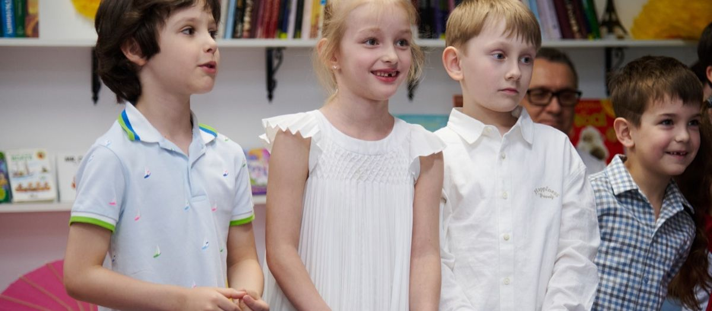

Сколько стоит частная школа в Москве и за что вы платите

 Статью написал педагог ONE!Белов Дмитрий СергеевичУчитель математики20 лет практикиВ школе с 2006 годаУчит считать до конца и проверять ответ на правдоподобие. Цену школы разбирает так же: по статьям расходов.
Статью написал педагог ONE!Белов Дмитрий СергеевичУчитель математики20 лет практикиВ школе с 2006 годаУчит считать до конца и проверять ответ на правдоподобие. Цену школы разбирает так же: по статьям расходов.
Родители редко спрашивают о цене напрямую, а школы редко называют её первой. В итоге разговор о деньгах происходит в самом конце, когда все уже привязались к школе. Ниже разбираем без стеснения: сколько стоят частные школы в Москве, из чего складывается цена, где прячутся дополнительные расходы и как сравнивать школы по деньгам честно.

- Диапазон в Москве: от 40 до 300 тысяч рублей в месяц за школу, от 60 до 200 за сад.
- Цена складывается из четырёх статей: педагоги, помещение, программа, сервис. Первая самая большая.
- Сравнивать нужно полную стоимость года со всеми доплатами. Цифра на сайте это только начало.
01Три ценовых сегмента
Условно московские частные школы делятся на три группы. Границы размытые, но ориентир помогает.
| Сегмент | Цена в месяц | Что обычно внутри |
|---|---|---|
| Базовый | 40-80 тыс. ₽ | Классы 15-20 человек, российская программа, английский 3-5 часов в неделю, продлёнка. Часто арендованные помещения. |
| Средний | 80-180 тыс. ₽ | Классы 10-15 человек, английский ежедневно, часть предметов на языке, полный день с кружками, своя территория, психолог и тьютор. |
| Премиум | 180-300 тыс. ₽ и выше | Международные программы (IB, Cambridge), носители языка, классы до 10 человек, кампус, пансион или расширенный день. |
Цена не гарантирует качество внутри сегмента. В среднем сегменте есть школы сильнее некоторых премиальных. Сегмент говорит только о наборе услуг.
02Из чего складывается цена
Педагоги
Самая большая статья, обычно половина бюджета школы. Сильный учитель начальных классов, педагог-предметник с категорией, англоговорящий педагог для среды стоят дорого, и в классе на двенадцать человек их зарплата делится на двенадцать семей вместо тридцати. Поэтому маленький класс и дороже.
Помещение
Своя территория с двором, спортзалом и охраной стоит несопоставимо дороже этажа в бизнес-центре. За это платят родители. Спросите себя, важен ли вам двор, и вы поймёте, готовы ли за него платить.
Программа
Международные программы и экзамены (IB, Cambridge, IELTS) требуют лицензий, обучения педагогов и внешних проверок. Это добавляет к цене. Российская программа с сильной надстройкой дешевле при том же результате по ЕГЭ.
Сервис
Питание с учётом аллергий, полный день до семи вечера, транспорт, кружки, лагерь на каникулах. Всё это может входить в цену или оплачиваться отдельно, и здесь главная зона неясности.
03Где прячутся дополнительные расходы
Реальные расходы за год часто в полтора раза больше цифры на сайте. Вот что обычно оплачивается отдельно.
От 50 до 500 тысяч рублей единовременно. Иногда возвратный, чаще нет.
10-25 тысяч в месяц, если не включено.
20-60 тысяч в год.
10-30 тысяч в год.
Часть бесплатных, часть от 5 тысяч в месяц за каждый.
От 3 тысяч за городскую до 100 и выше за выездную.
Отдельно, от 40 тысяч за смену.
Если школа не закрывает подготовку к ЕГЭ, добавьте 20-60 тысяч в месяц в 10-11 классах.
Попросите таблицу с полной стоимостью года. Школа, которая ведёт учёт, даст её за минуту.

04Как сравнивать школы по деньгам
Сравнивайте не цену в месяц, а стоимость года на одного ребёнка со всеми обязательными доплатами, делённую на количество учебных часов. Дальше смотрите, что входит в эти часы: английский в среде или три урока в неделю, домашние задания под присмотром или нет, кружки в цене или отдельно.
Пример: школа А берёт 100 тысяч в месяц и всё включает, школа Б берёт 80, но питание, продлёнка и два кружка стоят ещё 35. Школа Б дороже на 15 тысяч при меньшем наборе.
05Где можно сэкономить без потери качества
Многие школы дают скидку 5-10% при годовой оплате.
Скидки на братьев и сестёр от 10 до 30%.
Транспорт, если живёте рядом. Лагерь, если есть дача. Половина кружков, если ребёнок ходит в спортивную секцию.
Некоторые школы дают скидки за результаты на олимпиадах. Спросите.
Где экономить нельзя: на педагоге начальных классов и на размере класса. Это то, за что вы, собственно, и платите.
06Стоит ли это денег
Честный способ ответить: посчитайте, во что обходится государственная школа с добором. Репетитор по английскому дважды в неделю, репетитор по математике, кружки, продлёнка, няня до вашего возвращения. В Москве это легко выходит в 60-100 тысяч в месяц и требует логистики. Частная школа среднего сегмента закрывает то же самое в одном месте. Разница в деньгах часто меньше, чем кажется, а разница в нервах существенная.
Стоимость обучения по кампусам и классам публикуем на отдельной странице: [уточнить: ссылка на страницу стоимости после восстановления]. В цену входит [уточнить: что входит: питание, продлёнка, кружки]. Отдельно оплачивается [уточнить]. Скидки: [уточнить: второй ребёнок, годовая оплата]. Полную таблицу расходов на год выдаём на экскурсии.
07Частые вопросы
Зависит от договора. Обычно возвращают оплаченные, но не отученные месяцы, вступительный взнос нет. Читайте договор до подписания.
Растёт, в среднем на 5-15% в год. Спросите, как менялась цена за три года, это честный прогноз.
Да, если у школы есть лицензия. Уточните порядок в школе и в СФР.
Есть, 13% с суммы до 110 тысяч в год на ребёнка. Школа выдаёт справку.
08Что дальше
Приходите на экскурсию, попросите таблицу полной стоимости года и сравните с другими школами по одной методике. Телефон +7 (495) 152-22-21.